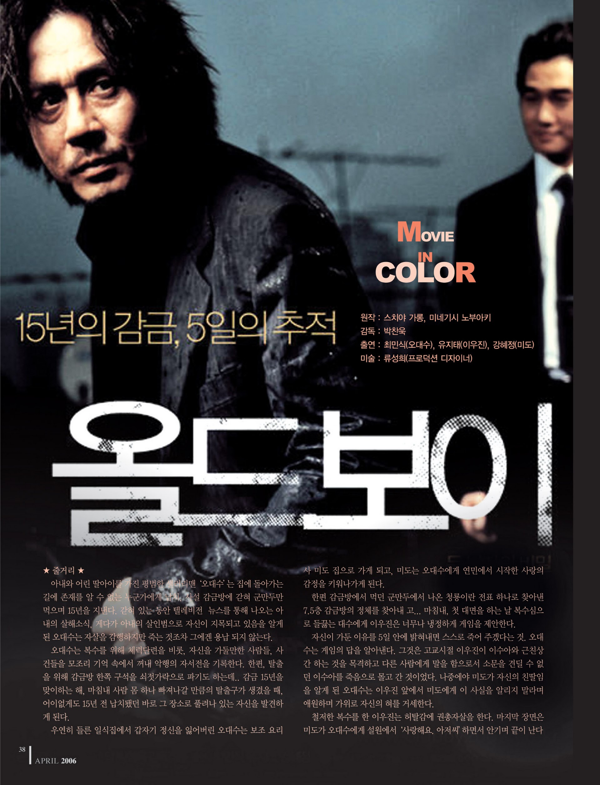
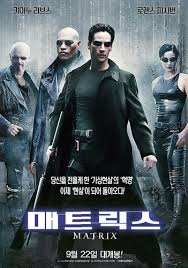
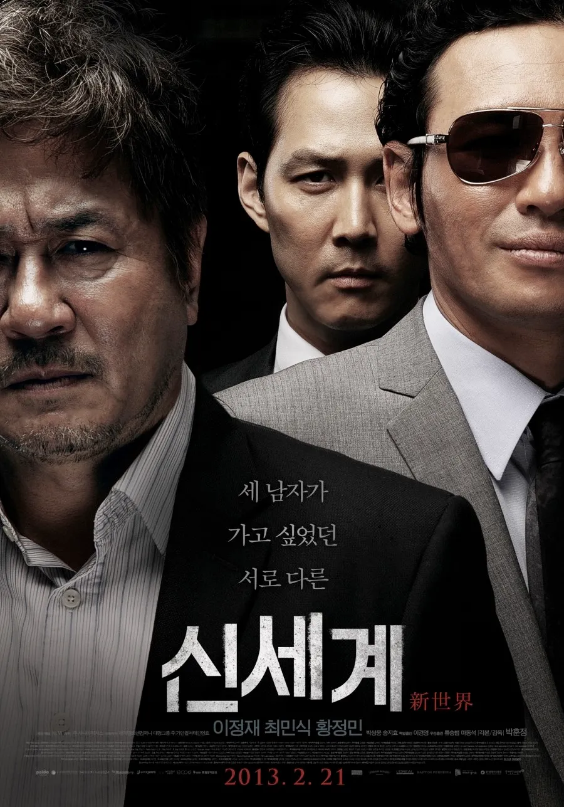

| 1 |
올드보이 |
 |
아내와 어린 딸과 함께 사는 오대수는 술이 취해 집에 돌아가는 길에 누군가에게 납치당한다. 8평의 좁은 방에서 감금당한 채 매일 군만두를 먹는 대수는 우연히 뉴스를 통해 아내가
살해당했고 아내의 살인범으로 자신이 지목되고 있음을 알게 된다.
|
클릭 |
| 2 |
매트릭스 |
 |
AI가 인간의 기억을 조작하는 가상 현실 매트릭스가 존재하는 미래, 매트릭스에서 빠져나온 모피어스는 함께 인류를 구할 영웅을 찾아 헤매다가 회사원이자 해커인 네오를 선택한다.
|
클릭
|
| 3 |
신세계 |
 |
범죄 조직 골드문에 몰래 숨어들어 오랜 기간 수사를 이어가던 경찰 자성은 자신을 깊게 신뢰하는 조직의 실권자 정청과 경찰 조직 사이에서 고민에 빠진다. |
클릭 |
| 4 |
타짜 |
 |
가구공장에서 일하는 가난한 청년 고니는 박무석 일행이 벌이는 화투판에 끼었다가 전 재산을 날린다. 뒤늦게 그들이 짜고 친 판에 놀아난 것을 안 고니는 박무석 일행을 찾아 나서고,
전설의 타짜 평경장을 만나 타짜의 길로 들어선다. 전국의 화투판을 휩쓸던 고니는 박무석 일행을 만나 복수에 성공한다.
|
클릭 |
| 5 |
서울의 봄 |
|
1979년 10.26 사건 후 보안사령관 전두광이 사조직을 이끌고 쿠데타를 일으키자, 수도경비사령관 이태신과 정부군이 이제 맞서면서 한국의 운명을 건 내전이 발발한다. |
클릭
|